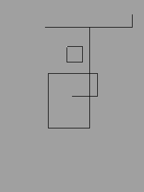

This application demonstrates simple key input, graphics output, and the permanent storage option.

This example is included in the MoSync SDK installation in the /examples folder. For information on importing the examples into your workspace, see Importing the Examples.
This example application requires a device with a keypad and arrow keys or a joystick.
A grey screen welcomes you. Use the keypad's arrow keys or joystick to move the pen and draw a black line.
When you exit the program by pressing the "0" key, the sketch is automatically saved to a permanent store. If a has been saved properly, it will be loaded automatically next time you start the program.